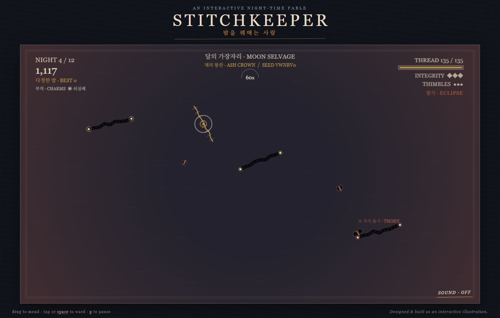
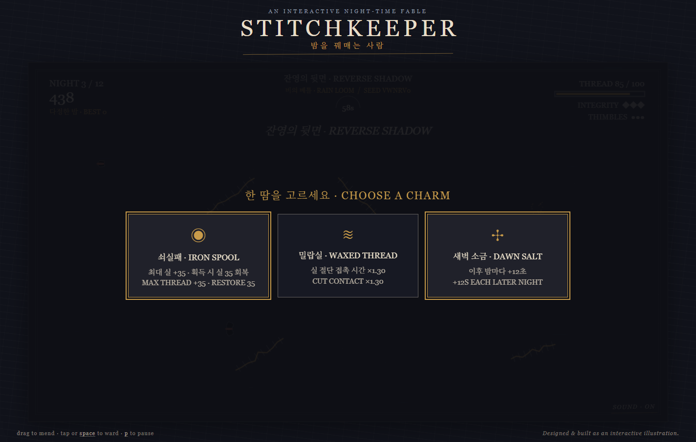
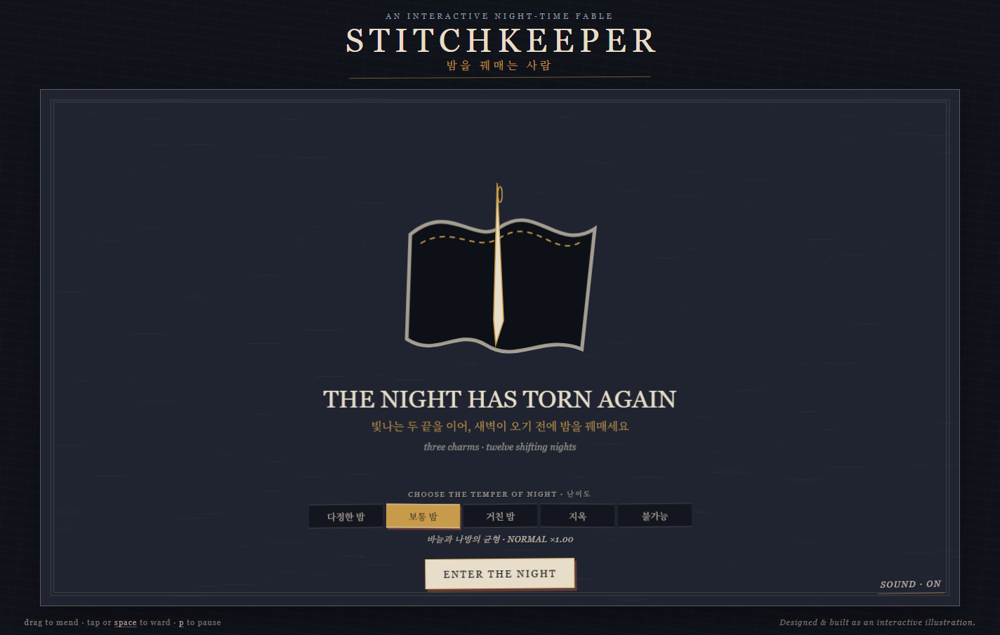

Plain · Moon · Ward · Thorn
Plain은 기준 재봉선, Moon은 골무를 회복하고 Ward는 방어 파동을 냅니다. Thorn은 좁고 위험하지만 높은 점수를 주어 꿰매는 순서에 우선순위와 리스크·보상을 만듭니다.
GAME 08 KNOTCRAFT EDITION
12밤을 꿰매며 재봉선의 위험과 보상을 읽고, 세 번의 부적 드래프트로 런을 만들어 Eclipse의 압박을 견디는 드로잉 점수 게임입니다.
PLAY PUBLIC WEB BUILD →
01 · RUN LOOP
12밤 캠페인의 3·6·9밤 후에 9개의 실제 런 빌드 부적 중 3개가 결정론적(deterministic), 중복 없이(non-repeating) 제시됩니다. 선택한 부적은 실, 골무, 바느질 허용 폭, 절단 저항, 나방 속도·가속, 자동 워드, 점수, 온전함, 후반 밤의 시간을 바꾸어 다음 경로와 방어 타이밍을 함께 바꿉니다.
24개의 물질적으로 구별되는 저작 포인트 클라우드(point-cloud) 패턴 청사진은 seed 기반 mirror·rotation·jitter·order 변형으로 랜덤하게 재구성되며 기하 안전성을 유지합니다.
Plain은 기준 재봉선, Moon은 골무를 회복하고 Ward는 방어 파동을 냅니다. Thorn은 좁고 위험하지만 높은 점수를 주어 꿰매는 순서에 우선순위와 리스크·보상을 만듭니다.
Eclipse 밤 4/8/12는 나방(moth) 하나를 더하고 실제 속도(speed), 가속(acceleration), 점수(score) 압박을 높입니다. 드래프트한 빌드와 특수 재봉선의 순서가 생존 루프로 연결됩니다.
다정한 밤, 보통, 거친, 지옥, 불가능의 5단계 난이도가 유지됩니다. 지옥/불가능(Hell/Impossible)은 의도적으로 극단적(intentionally extreme)입니다.
1280×720 Canvas 2D 세계에 저작 회화 질감, 한·영 드래프트, 빌드 HUD와 합성 Web Audio를 결합했습니다.
02 · RUN SCREENS


03 · SCOPE
STITCHKEEPER 3.0.0 KNOTCRAFT 정적 싱글 플레이어 에디션입니다. 서버리스·오프라인 런타임이며 canonical source suite의 Node 서브테스트 16/16, Chromium smoke, 독립 소스 리뷰를 통과했습니다.